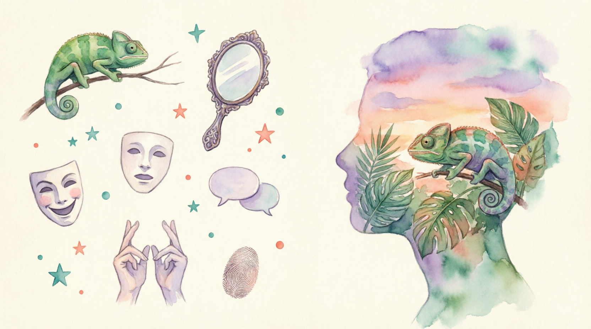

Why we mimic each other — and what it says about us
1. Have you ever caught yourself copying a friend's gesture or accent? Why do you think it happened?
2. Do you behave differently with different social groups? Is that being fake or being flexible?
Have you ever been in mid-conversation with someone, when you look over and find them standing in the same position as you or holding the same facial expression? It may seem like they have consciously copied you, but it is much more likely that this is the chameleon effect at play. The chameleon effect is the nonconscious mimicry of another person's gestures or mannerisms. Just as a chameleon blends into the background to match any environment's colours, people acquire the behaviours of others to bring them closer together and help make their interactions smooth and well-received.
Evidence that the chameleon effect was a real phenomenon was demonstrated in an experiment by psychologists John Bargh and Tanya Chartrand in 1999. The duo wanted to see if the chameleon effect worked in both acquaintances and complete strangers.
The first of their experiments included 78 people, who each spoke with an experimenter. During three parts of the test, Bargh and Chartrand studied whether participants would copy the actions of someone they hadn't met before – such as waggling the foot and touching the face. The second experiment measured the impact that copying someone has on the person being mimicked.
In the first stage, when gestures were applied, participants increased their face touching by 20% and their foot movement by 50%, while in conversation about a photograph with the experimenter.
The individuals weren't aware of what they were being studied for, and the photograph was used as a distraction to ensure subconscious acts. The second part of the experiment involved half of the participants being mimicked, and then rating the likeability of the experimenter.
The results showed that those who were mimicked scored the experimenter higher.
Due to these mirrored movements being carried out without conscious thought, researchers don't have all the answers as to why we create moments of symmetry. However, studies such as this have shown that when someone copies our behaviour, we develop more positive feelings about them. These interactions could be a person subconsciously willing to be liked, and forming a moment of connection and empathy.
To understand the empathetic theory of the chameleon effect, consider how you would respond in a situation where your close friend tells you they have just passed an exam they had been really worried about. If your friend tells you the news in an excitable and happy manner, the chances are you respond in a similar tone. This is because it is part of human nature to share feelings and navigate through life with companions. Most people want to share in the happiness of their friends or show others that they want the same outcomes.
Another theory about why the chameleon effect exists is as an adapted survival trait. Being able to fit in with those around you, and being accepted into a group means that there are others who can have your back when under threat. In modern life, the brain may react similarly when moving abroad or into another new group. Because those who live in the same country or community usually share the same behaviour, traits, knowledge and attitude, it is natural for outsiders to initially feel vulnerable.
In some instances, the chameleon effect targets speech. As your brain processes a strong new accent during conversation – or is exposed to new vocabulary – you may begin to adopt a different accent to the one you use daily. Similarly, if you spend enough time talking to someone who uses a particular word or phrase, it is easy to unintentionally incorporate new phrases into your regular speech. Accidentally developing the foreign accent of the person you are talking to can come across as offensive and mocking, as many people have never heard of the chameleon effect.
Couples and close friends are significant targets for the power of the chameleon effect. Some happy couples, for example, are described as being 'made for each other' as they seemingly live life in synchronisation. For most couples, their similarities grow over the years.
By spending significant amounts of time together during each day, couples develop some of each other's quirks and routines until they both appear to be very similar to an outsider. Meanwhile, those in the couple are unlikely to notice much or any change in their persona, themselves.
Your own signs of the chameleon effect may go unnoticed, but some celebrities in the public eye can't escape this awareness and are frequently called out for their changing behaviours. One example can be heard in the video of English football player Joey Barton being interviewed in a French accent that went viral in 2012. This wasn't because of what he said, but because he had only lived in France for a matter of months. The football player had recently been signed to play for Marseille, and had been living there for the season. As he answered questions at the press conference in France, his Scouse English accent was swapped for French pronunciations.
The accent wasn't put on to allow the French audience to better understand him, as he was speaking to his French translator.
In an interview later on, he explained that he had no idea that was how he was speaking at the time, but came to realise it around 15 minutes into the interview.
According to psychologists, when the chameleon effect occurs to you during time in a country that speaks a different language, self-consciousness is heightened. Those who actively worry about fitting in and not being able to communicate are most likely to subconsciously develop new accents and mannerisms in a foreign country.
The main reasons behind humans' social flexibility and mimicry are positive. However, too much of the chameleon effect can be damaging. Some people carry this chameleon trait to the extreme, causing them to drastically change in different situations. When this happens, people can lose their sense of self. Those who change their entire personalities in different groups often go undetected. But more common signs of the chameleon effect are easier to pinpoint. Next time you are in a social gathering, take a look around for subtle mirroring gestures, and you might just see some chameleons for yourself.
When working in a job, most people mimic the behaviour of people in the workplace in some way, whether consciously or not. This is because, in general, many people like to keep their work and social life relatively separate.
For others, there is a certain persona that they believe they need to achieve to progress in their profession.
One study, carried out by psychologists at the University of Cambridge, found that most people felt they had to suppress some aspect of their personality at work to appear professional.
Of those who did this, introverted people found it easier than extraverted people. The study concluded that extraverts felt more stressed and exhausted by fitting in to the tone of their jobs. Psychologists think this may be because there are more opportunities for introverts to return to their true selves at work, as opposed to extraverts.
Employees can spend time working alone in most jobs, which doesn't benefit the extraverted chameleon so much.
According to the text, what is the "chameleon effect" and what are two possible reasons why humans mimic each other unconsciously?
Pick one question you like the most:
Is there a specific person whose mannerisms you've accidentally picked up over time (laughing like them, using their hand gestures)?
OR: Have you ever noticed two people who have been together for a long time who physically look or sound alike? Do you find that charming or slightly unsettling?
1. Have you ever caught yourself unintentionally mimicking a friend's laugh, catchphrase, or mannerism?
2. Who helps you navigate through life's biggest challenges?
3. Who in your life can you always count on to have your back?
4. In what kind of new social situation do you most feel vulnerable?
5. If you could swap one daily habit for a better one, what would it be?
6. What is a personal strength of yours that often goes undetected?